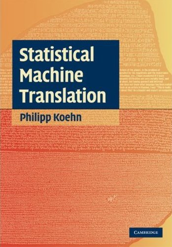
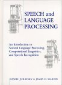

About this course
- Discussion board: discuss on courses.cs.sfu.ca
- Class Mailing List: cmpt-825@sfu.ca (only for announcements)
- Location: Burnaby Mountain Campus
- About the course:
Natural Language Processing (NLP) is the automatic analysis of human language by computer algorithms. These algorithms can be used to translate from one language to another, to convert unstructured data such as transcribed speech or large text collections (like the web) into structured forms, or to produce natural language summaries from complex information sources. The course will be cover machine learning methods for NLP including statistical machine translation, Bayesian non-parametric models, unsupervised learning and semi-supervised learning. (This course will be in Area 3).
- Course Outline: on CS Portal
- Grading for the course:
- 4 homeworks: 10% each (total of 40%)
- Class participation (in-class + email): 10%
- In-class presentations: 20%
- Project proposal: 5% (due on Nov 20, 2012)
- Final project write-up and results: 25% (due on Dec 9, 2012)
Textbook and References
- There is no official textbook for this course; use the lecture notes and reading from Syllabus.
Recommended Textbooks:
-

Foundations of Statistical Natural Language Processing by Christopher D. Manning, Hinrich Schutze. 680 pages 1 edition (1999), M.I.T. Press/Triliteral, ISBN: 0262133601 -
 Statistical Machine Translation by Philipp Koehn. Hardcover, 488 pages. Publisher: Cambridge University Press. ISBN-10: 0521874157. ISBN-13: 978-0521874151
The book also has a webpage. In particular visit it for the Errata. -
 Speech and Language Processing: An Introduction to Natural Language Processing, Computational Linguistics, and Speech Recognition by Daniel Jurafsky, James H. Martin. 934 pages 1 edition (January 26, 2000), Prentice Hall, ISBN: 0130950696
The book also has a webpage. In particular visit it for the Errata and the online Resources sections.
We will follow the material in this textbook closely but not in all aspects. The exercises and discussion in this book will be helpful to supplement what is discussed in class. -

Introduction to Natural Language Processing by Steven Bird, Ewan Klein and Edward Loper. This book describes the Python-based Natural Language toolkit that will be useful for your homeworks and project. Tutorials for NLTK are available online on nltk.sf.net.
Readings
Readings marked with "Student: " are presented by students in class. Presentations are typically 20 minutes plus 10-15 minutes for discussion. Students are encouraged to use presentation materials published on the web by the authors of the paper.
- Introduction (Week 1) 9/4:9/6
- Lillian Lee. I'm sorry Dave, I'm afraid I can't do that: Linguistics, Statistics, and Natural Language Processing circa 2001. The National Academies' study on the Fundamentals of Computer Science.
- Frederick Jelinek. Five speculations (and a divertimento) on the themes of H. Bourlard, H. Hermansky, and N. Morgan. Speech Communication, Volume 18, Issue 3, May 1996, Pages 242-246
- Steven Abney. Statistical methods. Encyclopedia of Cognitive Science, Nature Publishing Group, Macmillian.
- Steven Abney. Statistical Methods and Linguistics. In: Judith Klavans and Philip Resnik (eds.), The Balancing Act: Combining Symbolic and Statistical Approaches to Language. The MIT Press, Cambridge, MA. 1996.
- Parsing (Week 2) 9/11:9/13
- Discriminative Training Methods for Hidden Markov Models: Theory and Experiments with Perceptron Algorithms. Michael Collins. EMNLP 2002.
- Syntax: a survey of syntactic parsing. Anoop Sarkar. In Multilingual Natural Language Processing Applications: From Theory to Practice, edited by Dan Bikel and Imed Zitouni. Addison-Wesley. 2011.
- Slides:
- Mistake-bound for the perceptron. source code demo by Julien Vitay.
- Viterbi algorithm for Hidden Markov Models demo. Anoop Sarkar.
- Probabilistic Context Free Grammars. lecture notes.
- CKY Parsing for CFGs. lecture notes.
- Global Linear Models for Tagging and Parsing. Michael Collins. lecture notes.
- Dependency Parsing (Week 3) 9/18:9/20
- Dependency Parsing. Chp 3 and 4. Sandra Kübler, Ryan McDonald, Joakim Nivre. Morgan and Claypool.
- Slides:
- Arc-standard and Arc-eager dependency parsing. lecture notes.
- Introduction to Data-driven Dependency Parsing. Ryan MacDonald and Joakim Nivre. ESSLLI 2007.
- Dependency Parsing. Joakim Nivre and Sandra Kübler. Tutorial at COLING-ACL, Sydney 2006.
- Phrase-structure Parsing (Week 4) 9/25:9/27
- PCFG Models of Linguistic Tree Representations. Mark Johnson. Computational Linguistics, Volume 24, Number 4, December 1998.
- Accurate Unlexicalized Parsing. Dan Klein; Christopher D. Manning. In Proceedings of the 41st Annual Meeting of the Association for Computational Linguistics: ACL 2003.
- Parsing Algorithms and Metrics. Joshua Goodman. ACL 1996.
- Learning Accurate, Compact, and Interpretable Tree Annotation. Slav Petrov; Leon Barrett; Romain Thibaux; Dan Klein. Proceedings of the 21st International Conference on Computational Linguistics and 44th Annual Meeting of the Association for Computational Linguistics. COLING-ACL '96. (maryam & ravikiran)
- Slides:
- Prepositional phrase attachment. lecture notes.
- Klein and Manning paper. Slides by Uli Germann.
- Conditional Random Fields (Week 5) 10/2:10/4
- An Introduction to Conditional Random Fields. Charles Sutton, Andrew McCallum. Foundations and Trends in Machine Learning 4 (4). 2012.
- Shallow Parsing with Conditional Random Fields. Fei Sha and Fernando Pereira. In Proceedings of the 2003 Human Language Technology Conference of the North American Chapter of the Association for Computational Linguistics: HLT-NAACL 2003. (morgan)
- Language Modeling (Week 6) 10/9:10/10
- Kevin Knight. Sections 1-14 from Statistical machine translation workbook. manuscript.
- Stanley Chen and Joshua Goodman. An Empirical Study of Smoothing Techniques for Language Modeling. Technical Report TR-10-98, Harvard University, Aug 1998.
- Peter Brown, Peter DeSouza, Robert Mercer, Vincent Della Pietra, and Jenifer C. Lai. Class-based n-gram models of natural language. Computational Linguistics. Volume 18, Number 4, December 1992.
- Thorsten Brants; Ashok C. Popat; Peng Xu; Franz J. Och; Jeffrey Dean. Large Language Models in Machine Translation. Proceedings of the 2007 Joint Conference on Empirical Methods in Natural Language Processing and Computational Natural Language Learning (EMNLP-CoNLL) (xiaoqiang)
- David Talbot and Miles Osborne. Smoothed Bloom filter language models: Tera-Scale LMs on the Cheap. EMNLP, Prague, Czech Republic 2007. (rohit)
- Slides:
- N-grams. lecture notes.
- Smoothing. lecture notes.
- Brown clustering algorithm. Lecture notes by Michael Collins.
- Simple semi-supervised dependency parsering using Brown clusters. Lecture notes by Michael Collins.
- Introduction to Statistical Machine Translation (Week 7) 10/16:10/18
- Chp 1-2, Koehn. (see Textbook tab)
- Lopez, Statistical Machine Translation. In ACM Comp. Sur. 40(3): Article 8, pages 1-49, August 2008. Read the Errata for this survey on Adam's web page.
- Chiang, Huang and Knight, Slides on introduction to the statistical approach to MT.
- Lopez, Statistical Machine Translation. A 1 week course on SMT taught at ESSLLI 2010.
- Knight, Automating knowledge acquisition for machine translation, AI Magazine 18(4), 1997. (jingwen)
- Statistical Machine Translation: the basic, the novel, and the speculative. Philipp Koehn, Tutorial at EACL 2006.
- Decoding for phrase-based SMT (Week 8) 10/23:10/25
- Chp 6, Koehn
- Koehn, Pharaoh: a Beam Search Decoder for Phrase-Based Statistical Machine Translation Models, AMTA 2004.
- Christoph Tillmann; Hermann Ney. Word Reordering and a Dynamic Programming Beam Search Algorithm for Statistical Machine Translation. Computational Linguistics 29(1). March 2003.
- Koehn, Statistical Phrase-based Machine Translation, slides from HLT/NAACL 2003 paper.
- Koehn, Statistical Machine Translation: the basic, the novel, and the speculative, Tutorial at EACL 2006.
- Koehn, Och, Marcu, Statistical Phrase-Based Translation. HLT NAACL 2003. (vivek)
- Evaluation and Minimum Error Rate Training of Log-linear models for SMT (Week 9) 10/30:11/1
- Chp 8, Koehn
- Papineni et al, BLEU: A Method for Automatic Evaluation of Machine Translation. ACL 2002.
- Papineni, Introduction to SMT and the Bleu metric. Presentation Slides. (for description of Bleu, jump to pages 57-75)
- Chp 9.3, Koehn
- Och, Minimum Error Rate Training in Statistical Machine Translation. ACL 2003. (yasaman)
- Mark Hopkins and Jonathan May, Tuning as Ranking. Proceedings of the 2011 Conference on Empirical Methods in Natural Language Processing: EMNLP 2012. (xiangbo)
- Link: Zaidan, zmert and zmert paper.
- Word Alignment (Week 10) 11/6:11/8
- Chp 4, Koehn
- Kevin Knight's MT Workbook. We will discuss sections 15-37.
- Och and Ney, A Systematic Comparison of Various Statistical Alignment Models. Comput. Ling. v29, 2003.
- Vogel, HMM-Based Word Alignment in Statistical Translation, COLING, 1996. (arash)
- PCFG-based SMT (Week 11) 11/13:11/15
- GHKM, What's in a translation rule?. NAACL HLT 2004. (dll4)
- GHKMDWT, Scalable Inference and Training of Context-Rich Syntactic Translation Models. COLING-ACL 2006.
- What's New in Statistical Machine Translation, Kevin Knight and Philipp Koehn, Tutorial at HLT/NAACL 2003.
- Slides from Haitao Mi and Liang Huang (2008). Forest-based Translation Rule Extraction. EMNLP 2008.
- David Chiang's tutorial on synchronous grammars (slides).
- Hao Zhang and Daniel Gildea. Syntax-Based Alignment: Supervised or Unsupervised? In Proceedings of the 20th International Conference on Computational Linguistics (COLING 2004). (jian peng)
- Chiang, Hierarchical phrase-based translation. 2007. Comput. Ling. 33(2):201-228. (maryam & ravikiran) moved to Tue 11/20.
- Papers related to Student Projects 11/22:11/27
- P1: Word alignment using arbitrary features
- Dyer et al, Unsupervised Word Alignment with Arbitrary Features. ACL 2011.
- Berg-Kirkpatrick et al, Painless Unsupervised Learning with Features. NAACL 2010.
- P2: Left to right beam search decoding for Hiero
- Watanabe, Tsukada and Isozaki. Left-to-Right Target Generation for Hierarchical Phrase-based Translation. COLING-ACL 2006.
- Huang and Mi. Efficient Incremental Decoding for Tree-to-String Translation. EMNLP 2010.
- P3: Semantic Role Labelling
- Sentence Simplification for Semantic Role Labeling. D. Vickrey and D. Koller. ACL 2008.
- P4: Triangulation for Haitian Kreyol to English (via French)
- T. Cohn and M. Lapata, Machine Translation by Triangulation: Making Effective Use of Multi-Parallel Corpora. ACL 2007.
- P5: Ordinal regression, RankSVM for PRO-style SMT Tuning
- L. Shen, A. Sarkar and F. Och, Discriminative Re-ranking for SMT. HLT NAACL 2004.
- T. Joachims, Training Linear SVMs in Linear Time, Proceedings of the ACM Conference on Knowledge Discovery and Data Mining (KDD), 2006. (software)
- P6: Chinese Word Segmentation (multi-task learning)
- Training Global Linear Models for Chinese Word Segmentation. D. Song and A. Sarkar. In Proceedings of the 22nd Canadian Conference on Artificial Intelligence, Canadian AI 2009. Kelowna, BC. May 25-27, 2009.
- R. Ando and T. Zhang. A High-Performance Semi-Supervised Learning Method for Text Chunking. ACL 2005. (journal version from JMLR)
- P1: Word alignment using arbitrary features
Homeworks
- Homework #1. Sep 11 - Sep 25. 10% (readme)
- Homework #2. Sep 25 - Oct 9. 10% (readme)
- Homework #3. Oct 9 - Oct 23. 10% (readme)
- Homework #4. Oct 23 - Nov 6. 10% (readme)
Homework Submission
- Your homework will be submitted electronically using the department-provided submission server. Connect to the submission server by going to the URL: https://courses.cs.sfu.ca/ (your grades for the homeworks will also be tracked on the same web page)
- All homeworks are due by 11:45 PM on the homework due date.